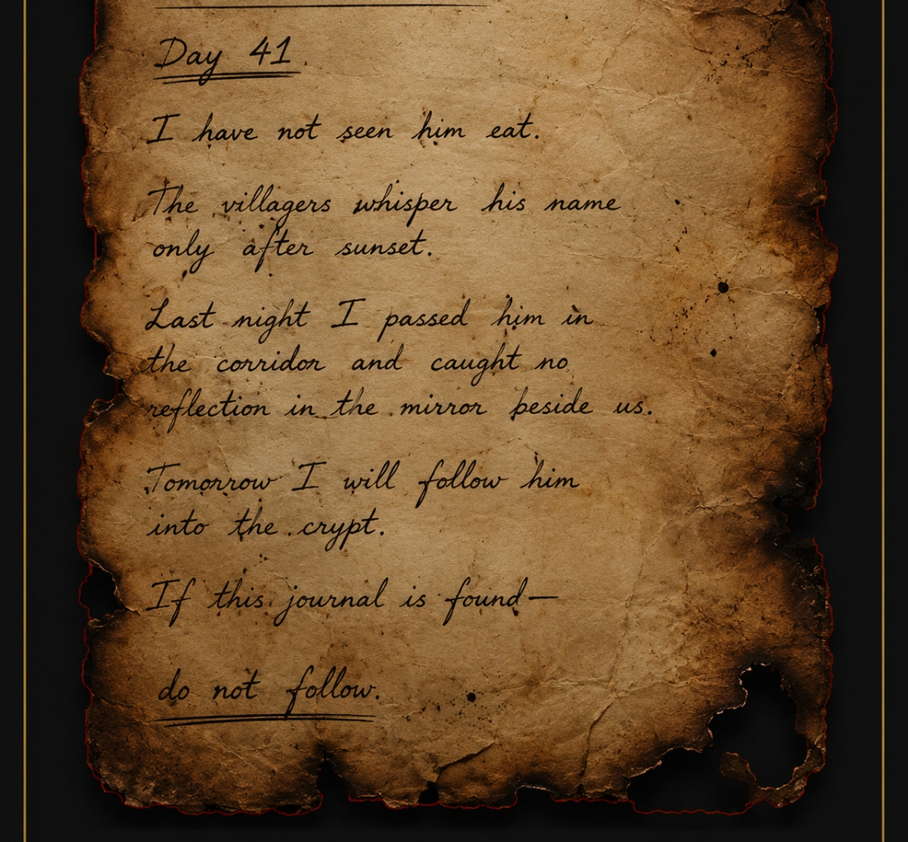

⬅ Return to the Dark Fantasy Library
Tracing the legends behind one of humanity's oldest monsters.
Long before vampires became the elegant immortals of modern books and television, they existed in whispers, legends, and ancient fears. Nearly every civilization has told stories of creatures that returned from the dead to feed upon the living, though their names and appearances often differed.
In the folklore of Eastern Europe, the vampire was rarely charming. These beings were often described as restless corpses, cursed souls, or spirits that rose from the grave to torment their families and villages. Illness, unexplained deaths, and strange events were sometimes blamed on the work of these undead creatures.

Many historians believe the vampire myth grew from humanity's attempt to explain the unknown. Before modern medicine, diseases could spread rapidly and mysteriously through a community. When several people died in quick succession, fear and superstition filled the gaps left by a lack of scientific understanding. In some places, graves were even reopened to search for signs that the dead had returned.
Over time, legends evolved. Ancient tales mixed with local traditions, creating countless versions of the vampire across the world. Some were monsters that drank blood, while others stole life energy or preyed upon dreams. Yet they all shared one common idea: death was not always the end.
The image of the vampire changed dramatically during the nineteenth century with the rise of Gothic literature. Writers transformed the creature from a mindless horror into a mysterious and intelligent immortal. This evolution reached new heights with famous fictional vampires, whose elegance, power, and tragic loneliness continue to capture the imagination of readers and viewers today.
Perhaps that is why the vampire myth has endured for centuries. It speaks to some of humanity's oldest questions: if death could be defeated? What price would immortality demand? And if eternal life were possible.